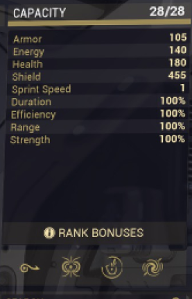

Começemos primeiro por referir os metodos mais simples sem entrar em detalhes sobre cada um.
Temos Agilidade, Tank, Habilidades. Estes são de um modo geral os tipos mais comums de playstyle.
Mais informações sobre os playstyles no nivel seguinte: Intermédio
No entanto todos tem em comum a mesma coisa na qual se trata da informação em relação ao Warframe.
Estatísticas

Como podemos ver na imagem existem 15 dados comuns a todos. Vamos então abordar agora cada um dos dados e os explicar.
Capacidade
A Capacidade é um dado que vai estar presente em qualquer coisa que tentemos melhorar uma vez que é este dado que vai nos limitar o como o configuramos.
Mas então para que serve este dado? Pois bem como vai ser aprofundado no nivel seguinte, a capacidade dita o somatório que é permitido para colocarmos os mods.
Tal que tomemos por exemplo a imagem. Podemos observar que aparece lá 28/28, o que significa de momentos temos a capacidade total e como tal podemos o que quisermos contanto que nao tenha custo maior que 28.
Assim caso queiramos tornar mais forte algo devemos tentar esgotar ao maximo esta capacidade de modo a podermos colocar o maximo possivel de mods que nos beneficiem.
Caso queiras aprender mais sobre quais mods colocar e como funcionam lê a secção Intermédio.
Armadura
A Armadura tem como função reduzir o dado causado à vida (tópico que vai ser desenvolvido mais abaixo) mas não a escudos (outro tópico que vai ser abordado mais abaixo).
Tomemos por exemplo a imagem mostrada acima a mesma diz que este Warframe tem 105 de Armadura, no que se traduz numa percentagem do dano ser negada que é explicado e mostrado como se calcula no artigo do Dano.
Energia
p>A energia no Warframe funciona da mesma maneira que a mana ou MP em muitos outros jogos. Ou seja, a energia funciona como recurso que usamos para usar habilidades.
Tomemos então por exemplo o caso da imagem. A mesma informa o jogador que ele tem 140 de energia. No entanto, isto não implica que no começo da missão tenhamos esta quantidade, dado que este valor inicial tem algumas formas de ser alterado de modo a começar com mais energia.
A fórmula que é usada para calcular a energia inicial é: Energia default + 5 * Capacidade restante
É necessário realçar os dois fatores que são usados para calcular: o primeiro energia default é um valor que é diferente para cada Warframe, por outro lado a Capacidade restante vai ser um valor que vai variar com base nas builds que o jogador utilizar.
Vida
Algumas destes dados como a Armadura (que já foi explicado o que é e como funciona), a Vida e o Escudo (que vai ser explicado a seguir) são calculados de maneira diferente consoante a entidade.
Isto é o mesmo dano causado pela mesma fonte a diferentes inimigos causa diferentes valores pois cada um tem as suas vantagens e desvantagens.
Posto isto aparte vamos manter as informações o mais simples possivel e apenas adentrar na questão referida antes ao ler-se o artigo sobre o Dano.
Mas voltando ao tópico em questão a vida é o valor que nos indica a quantidade de dano que podemos sofrer antes de entramos no estado de sangramento.
Ou seja, quando a nossa vida chegar a 0 entramos nesse estado, no qual podemos ser ajudados por outros ou então revivermos a nós mesmos caso, algo que apenas se aplica a jogadores que cumpram certos requesitos, alguns que são referentes a história e então recomendo ler o artigo sobre a história do jogador.
Escudo
Por fim o ultimo dos dados que varia em comparação com o resto dos inimigos é o escudo mais informações como dito podem ser encontradas no tópico: Dano.
De maneira simples o escudo serve como uma parede entre o dano recebido e a nossa vida.
Isto posto em outras palavras significa antes de sofremos dano na nossa vida salvo a exceção do dano tóxico o dano recebido vai ser causado primeiro no escudo antes da vida.
Há que realçar que a grande maioria dos Warframe possuem Armadura, Vida e Escudo, no entanto existem alguns que não possuem escudos e como tal, qualquer modificação que façamos sobre esse valor não vai ter qualquer tipo de efeito.
Velocidade
Velocidade é o valor que nos vai indicar o quão afetado é a nossa velocidade a andar normal e a correr.
Estes valores podem ser calculdo da seguinte maneira:
Andar normal: 6 * Velocidade
Correr: 1.25 * Andar normal
Analisemos agora o exemplo da imagem temos 1 como valor de velocidade logo andaremos normalmente a 6 m/s e a correr 7.5 m/s
Duração
Duração é o dado que nos indica como vai ser calculado o dreno de energia por segundo de algumas habilidades como tambem o tempo que as habilidades ficam ativas.
Tomemos agora o exemplo da imagem, a mesma refere que temos 100% duração o que implica que o valor a ser utilizado nas contas é 1, porque é possivel ter menos de 100%.
Mas isso vai ser explicado no nível Intermédio, mas por questão de simplicidade vamos dizer por enquanto que ter 100% significa que as habilidades não vão sofrer qualquer tipo de buff ou debuff.
Efeciência
Efeciência é o dado que nos indica como vai ser calculado o valor de energia ser utilizado pelas habilidades quer naquelas que sejam de dreno ou de cast.
Como referido antes se tomarmos o exemplo da imagem o valor é 100% o que indica que o valor a ser usado é 1, no que se traduz em ausência de buffs ou debuffs.
Alcance
Alcance é o dado que nos indica a distância a que certas habilidades estão a exercecer o seu efeito.
Novamente como as outras duas variantes a mesma tendo 100% indica que não tem qualquer aumento quer redução na area de efeito.
Força
Força é o último dos dados que nos indica o quão forte vão ser as nossa habilidades.
Assim temos que: Duração, Efeciência, Alcance e Força são os quatros dados que tendo um valor de 100% não dão qualquer buff ou debuff.
Bónus de nivel
O bónus de nível refere-se a extras que são usados para calcular em outros dados como energia, vida, escudo e mais alguns para casos especificos de Warframe.
Estes valores apenas servem como indicadores para calcular com maior certeza os valores.
Uma vez que a medida que o nivel do Warframe vai aumentando os valores respetivos afetos vão sendo atualizados e então quando olhamos novamente estes dados os mesmos já vão ter em considerção estes bónus.
Isto tudo é apenas útil para quem sabe quais são as fórmulas utilizadas para calcular os dados afetados.
1ª Habilidade
Entremos agora nas habilidades algo que podemos utilizar durante as missões e que primeiro precisamos chegar a certo nivel para as usar. No caso da primeira habilidade esta vem sempre desbloqueada.
Analisemos agora então o que faz a habilidade da imagem, o nome da mesma não aparece mas é o conjunto das habilidades da Mag, um dos Warframes inciais.
Esta habilidade consiste de uma forma simplificada em puxar um inimigo para junto da Mag.
2ª Habilidade
A segunda habilidade é desbloqueada quando o Warframe chega pela primeira vez a nivel 3.
Novamente a habilidade apresentada na imagem corresponde a uma das habilidades do conjunto da Mag.
No caso esta habilidade funciona de duas maneiras diferentes, uma é quando damos target num inimigo e o mesmo fica preso dentro de uma bolha ao qual sofre dano constante e ao qual tambem podemos disparar sobre fazendo com que as balas fiquem dentro dessa bolha a refletir dentro das paredes.
Quando seguramos a habilidade, isto é carregarmos durante um bocado o botão da habilidade, cria-se uma bolha nas mãos da Mag que faz o mesmo que anterior, ou seja capta as balas e que quando o tempo acabar devolve as balas segundo uma area de efeito.
3ª Habilidade
A terceira habilidade é desbloqueada quando o Warframe chega pela primeira vez a nivel 5.
A terceira habilidade da Mag consiste em emitir um pulso que destroi escudos e armadura dos inimigos enquanto que ao mesmo tempo recupera escudos dos aliados.
4ª Habilidade
A quarta habilidade é desbloqueada quando o Warframe chega pela primeira vez a nivel 10.
Por fim temos a quarta habilidade que por vezes é também referida como a habilidade suprema dai apenas ser desbloqueada a nivel 10 em vez do nivel 7.
Qualquer das formas esta habilidade consiste em dar dano a todos inimigos que estejam dentro de uma certa area.